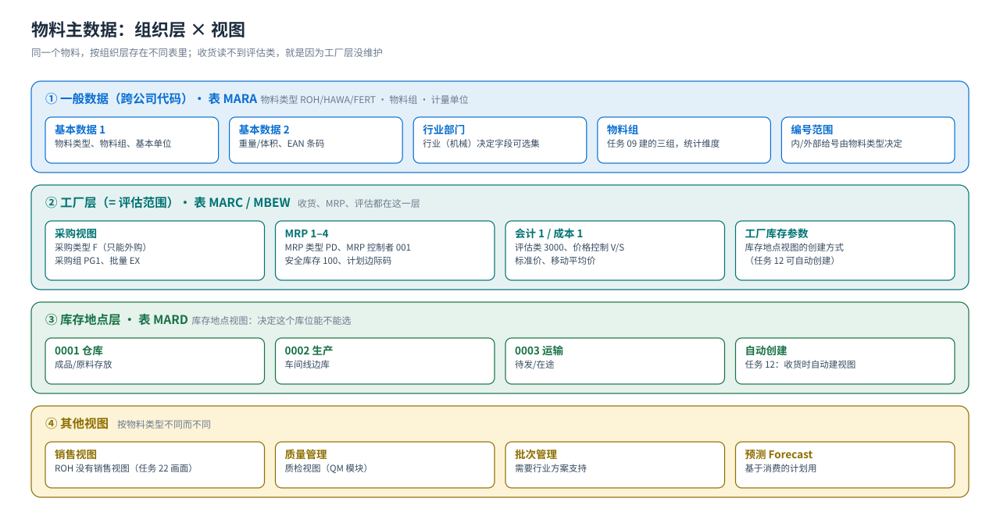

主数据
物料主数据（视图 × 组织层）· 供应商（三层）· 采购信息记录
MM 的主数据只有三样，但每一样都分层：物料（按视图 × 组织层拆）、供应商（一般/公司代码/采购组织三层）、采购信息记录（物料 × 供应商 × 采购组织）。搞清「哪个字段在哪一层、决定什么」，后面的流程才不会卡在报错上。
物料主数据是「分层 + 分视图」的
{kind=link}

为什么收货时报「未维护评估类」
物料主数据不是一张表，而是按组织层分别存储（MARA 一般 / MARC 工厂 / MARD 库存地点 / MBEW 评估）。你在工厂 P999 收货，系统要读 MBEW 里的评估类和价格 —— 如果建物料时没维护「会计 1」视图的评估类，收货就过不去。教材任务 22 特别提示：原书此处有误，原材料的评估类应为 3000。
视图清单（MM01 / MMR1 / MMH1 / MMF1）
| 视图 | 组织层 | 关键字段（教材值） | 影响哪些流程 |
|---|---|---|---|
| 基本数据 1 / 2 | 跨组织 | 物料类型 ROH/HAWA/FERT、行业部门、基本单位、物料组（任务 09） | 决定后面哪些视图可选；物料组是统计与采购分析维度 |
| 采购 Purchasing | 工厂 | 采购类型 F（只能外购，任务 22 画面）、采购组 PG1、采购批量 EX | 采购订单能否用这个物料；批量决定 MRP 建议量 |
| MRP 1–4 | 工厂 | MRP 类型 PD、MRP 控制者 001、批量 EX、安全库存 100、计划边际码 | MRP 运行（MD03/MD02）是否产生请购、什么时候产生 |
| 一般/工厂库存 Storage | 库存地点 | 库存地点 0001/0002/0003（任务 12 可自动创建） | 收货/发货能不能选这个库位 |
| 会计 1 / 成本 1 | 工厂（评估范围） | 评估类 3000、价格控制 V（移动平均价）/ S（标准价） | 自动记账找哪个存货科目（BSX）；价格控制决定差异怎么记 |
| 销售 Sales | 销售组织/渠道 | （ROH 没有销售视图 —— 任务 22 画面特意指出） | SD 能不能卖这个物料 |
价格控制 V / S 的取舍（教材原文提示）V = 移动平均价：每次收货按实际采购价重算平均价，采购价差直接进存货价值；S = 标准价：价格固定，采购价与标准价的差额进采购价差（PRD）科目。教材的产成品用 S（先 CK11N/CK24 估算标准成本，见 PP 站），原材料一般用 V。
物料类型（Material Type）
| 物料类型 | 名称 | 教材用途 | 特点 |
|---|---|---|---|
ROH | 原材料 | 罩壳 R999-100、飞轮、管轴、支撑架、金属片 | 外购；无销售视图；评估类 3000 |
HAWA | 贸易商品 | T999-100 高速增压涡轮泵（外购转卖） | 外购也可销售；评估类 3000；数量/价值更新（任务 18 演示） |
FERT | 产成品 | 铸钢泵 170-230（自制品，PP 站生产） | 自制；有销售视图；成本核算批量 10（任务 24） |
HALB | 半成品 | （教材未用，标准类型） | 自制/外购均可 |
怎么确认自己系统的物料类型
OMS2 可查物料类型的数量/价值更新设置；建物料时事务码 MM01 里点 F4 看可选类型；物料类型决定「可选视图」和「编号范围」，改类型要慎重（会影响已有库存的账）。建物料时最该盯住的 8 个字段
| 字段 | 在哪层 | 教材值 | 填错的后果 |
|---|---|---|---|
| 物料类型 | 一般 | ROH / HAWA / FERT | 视图不对、账不对，且不容易改 |
| 物料组 | 一般 | 三个物料组（任务 09） | 采购分析取不到数 |
| 采购类型 F / E | 工厂 | F（外购） | 自制件属性错，MRP 会产生生产订单而非请购 |
| MRP 类型 PD | 工厂 | PD = MRP | 不会自动产生需求，MD04 一片空白 |
| 批量 EX | 工厂 | EX 按批订货量 | 建议量不符合实际采购习惯 |
| 安全库存 | 工厂 | 100 件 | MRP 不补货，缺料风险 |
| 评估类 | 工厂（评估） | 3000 | 收货失败或记到错误存货科目 |
| 价格控制 | 工厂（评估） | V 移动平均 / S 标准 | 差异跑到错误科目（PRD/DIF） |
供应商主数据（三层）与 MK01
| 层 | 组织层 | 内容 | T-code |
|---|---|---|---|
| 一般数据 | 跨公司 | 名称、地址、税号、银行 | FK01/XK01（FI 建） |
| 公司代码数据 | 公司代码 | 对账科目、付款条件、付款方式（财务用） | 同上 |
| 采购数据 | 采购组织 | 采购组、付款条件、INCOTERMS、合作伙伴 | MK01（教材任务 26） |
教材场景红星轴承厂（供应商
10000000）在 FI 里已经有一般数据与公司代码数据；要用采购功能，只需补维护采购数据（MK01）。另两个供应商 10000001、20000000 同样维护。→ 这正是「同一主数据被 MM 与 FI 共用」的最好例子。采购信息记录（ME11）：货源的价格与交期
| 字段 | 教材值（管轴 R999-300 → 红星轴承厂） | 影响 |
|---|---|---|
| 标准订单数量 | 50 件 | 采购订单默认数量 |
| 净价 | 1700 元 / 件 | 采购订单默认价格；没有信息记录就要手输 |
| 交货时间 | 3 天 | 订单的建议交货日期 |
| 采购组 | PG1（原材料和运营供应） | 订单默认采购组 |
- 信息记录 = 「物料 × 供应商 × 采购组织」的价格与条件，是货源与定价的默认来源。
- 维护：
ME11创建 /ME12修改 /ME13显示；批量查：ME1M（按物料）或ME1L（按供应商）。 - 教材任务 27 的后半段用
MM02回改了某个物料信息（教材原文如此），实际项目里信息记录的价格改动走 ME12（会留下条件历史）。 - 没有信息记录也能下订单，但价格要手输，且不好统计 —— 这是「有没有货源管理」的分界。
教材画面（主数据）